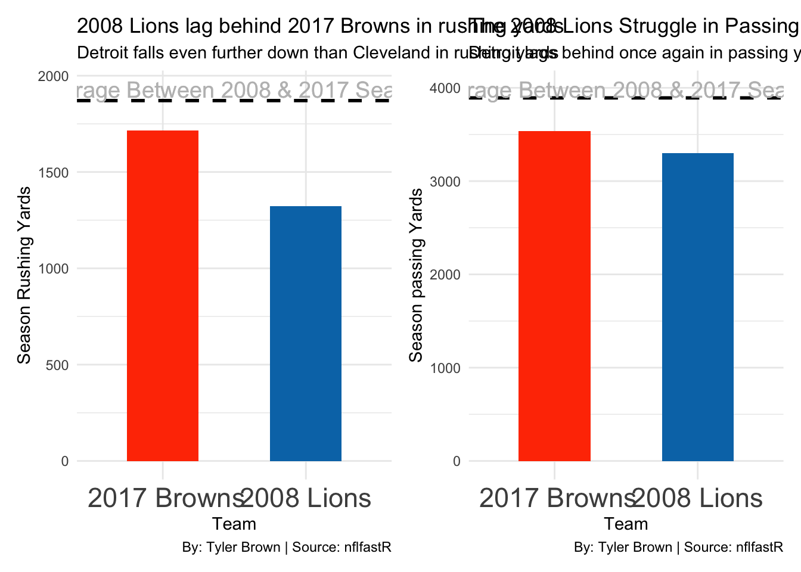
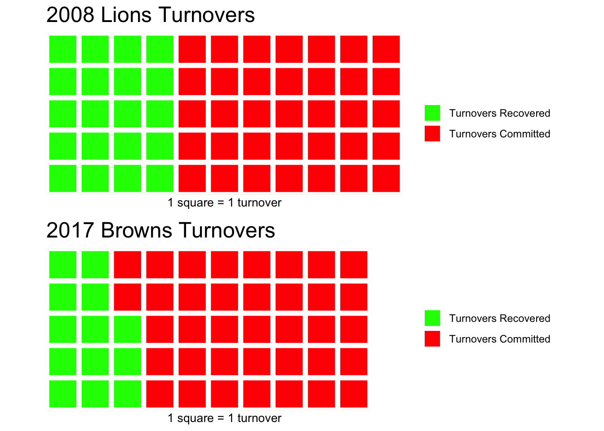
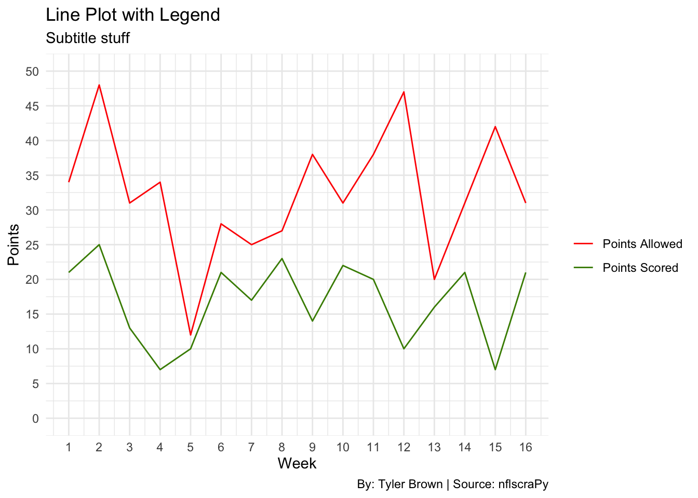
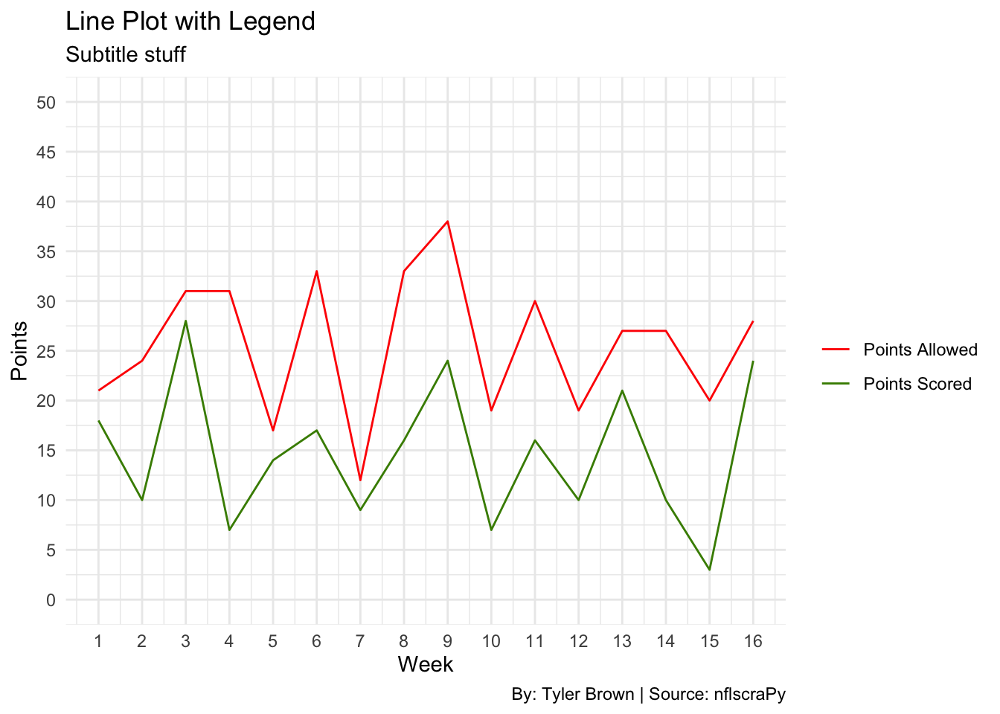

Code
library(tidyverse)
library(nflfastR)
library(patchwork)
library(waffle)
pbp2008 <- nflfastR::load_pbp(2008)
pbp2017 <- nflfastR::load_pbp(2017)Tyler Brown
November 17, 2024
The 0-16 Lions in were atrocious, but so were the 0-16 Browns in 2017.
`summarise()` has grouped output by 'game_id', 'home_team'. You can override
using the `.groups` argument.total_rushing2008 <- RushingYards2008 |>
summarise(
team = home_team,
total_rushing_yards2008 = sum(home_rushing_yards2008, na.rm = TRUE)
) |>
bind_rows(
RushingYards2008 |>
summarise(
team = away_team,
total_rushing_yards2008 = sum(away_rushing_yards2008, na.rm = TRUE)
)
) |>
group_by(team) |>
summarise(total_rushing_yards2008 = sum(total_rushing_yards2008, na.rm = TRUE)) |>
arrange(total_rushing_yards2008)`summarise()` has grouped output by 'game_id'. You can override using the
`.groups` argument.
`summarise()` has grouped output by 'game_id'. You can override using the
`.groups` argument.`summarise()` has grouped output by 'game_id', 'home_team'. You can override
using the `.groups` argument.total_rushing2017 <- RushingYards2017 |>
summarise(
team = home_team,
total_rushing_yards2017 = sum(home_rushing_yards2017, na.rm = TRUE)
) |>
bind_rows(
RushingYards2017 |>
summarise(
team = away_team,
total_rushing_yards2017 = sum(away_rushing_yards2017, na.rm = TRUE)
)
) |>
group_by(team) |>
summarise(total_rushing_yards2017 = sum(total_rushing_yards2017, na.rm = TRUE)) |>
arrange(total_rushing_yards2017)`summarise()` has grouped output by 'game_id'. You can override using the
`.groups` argument.
`summarise()` has grouped output by 'game_id'. You can override using the
`.groups` argument.Lions2008RushingYards <- total_rushing2008 |>
filter(team == "DET")
Browns2017RushingYards <- total_rushing2017 |>
filter(team == "CLE")
colnames(Lions2008RushingYards)[2] <- 'total_rushing_yards'
colnames(Browns2017RushingYards)[2] <- 'total_rushing_yards'
BrownsLionsRushingYards <- rbind(Lions2008RushingYards, Browns2017RushingYards)RushingBar <- ggplot(data = BrownsLionsRushingYards, aes(x = team, y = total_rushing_yards)) +
geom_bar(stat = "identity", fill = "#FF3C00", width = 0.5) +
geom_bar(data = Lions2008RushingYards, aes(x = team, y = total_rushing_yards), stat = "identity", fill = "#0076B6", width = 0.5) +
scale_x_discrete(
breaks = c("DET", "CLE"),
labels = c("2008 Lions", " 2017 Browns")
) +
labs(x = "Team", y = "Season Rushing Yards", title = "2008 Lions lag behind 2017 Browns in rushing yards", subtitle = "Detroit falls even further down than Cleveland in rushing yards", caption = "By: Tyler Brown | Source: nflfastR") +
geom_hline(yintercept = 1870.719, linetype = "dashed", color = "black", size = 1) +
geom_text(aes(x = 1.5, y = 1870.719 + 60, label = "Average Between 2008 & 2017 Season"),
color = "grey", size = 5, hjust = 0.5) +
theme_minimal() +
theme(
axis.text.x = element_text(size = 17))Warning: Using `size` aesthetic for lines was deprecated in ggplot2 3.4.0.
ℹ Please use `linewidth` instead.`summarise()` has grouped output by 'game_id', 'home_team'. You can override
using the `.groups` argument.total_passing2008 <- PassingYards2008 |>
summarise(
team = home_team,
total_passing_yards2008 = sum(home_passing_yards2008, na.rm = TRUE)
) |>
bind_rows(
PassingYards2008 |>
summarise(
team = away_team,
total_passing_yards2008 = sum(away_passing_yards2008, na.rm = TRUE)
)
) |>
group_by(team) |>
summarise(total_passing_yards2008 = sum(total_passing_yards2008, na.rm = TRUE)) |>
arrange(total_passing_yards2008)`summarise()` has grouped output by 'game_id'. You can override using the
`.groups` argument.
`summarise()` has grouped output by 'game_id'. You can override using the
`.groups` argument.`summarise()` has grouped output by 'game_id', 'home_team'. You can override
using the `.groups` argument.total_passing2017 <- PassingYards2017 |>
summarise(
team = home_team,
total_passing_yards2017 = sum(home_passing_yards2017, na.rm = TRUE)
) |>
bind_rows(
PassingYards2017 |>
summarise(
team = away_team,
total_passing_yards2017 = sum(away_passing_yards2017, na.rm = TRUE)
)
) |>
group_by(team) |>
summarise(total_passing_yards2017 = sum(total_passing_yards2017, na.rm = TRUE)) |>
arrange(total_passing_yards2017)`summarise()` has grouped output by 'game_id'. You can override using the
`.groups` argument.
`summarise()` has grouped output by 'game_id'. You can override using the
`.groups` argument.Lions2008passingYards <- total_passing2008 |>
filter(team == "DET")
Browns2017passingYards <- total_passing2017 |>
filter(team == "CLE")
colnames(Lions2008passingYards)[2] <- 'total_passing_yards'
colnames(Browns2017passingYards)[2] <- 'total_passing_yards'
BrownsLionspassingYards <- rbind(Lions2008passingYards, Browns2017passingYards)PassingBar <- ggplot(data = BrownsLionspassingYards, aes(x = team, y = total_passing_yards)) +
geom_bar(stat = "identity", fill = "#FF3C00", width = 0.5) +
geom_bar(data = Lions2008passingYards, aes(x = team, y = total_passing_yards), stat = "identity", fill = "#0076B6", width = 0.5) +
scale_x_discrete(
breaks = c("DET", "CLE"),
labels = c("2008 Lions", " 2017 Browns")
) +
labs(x = "Team", y = "Season passing Yards", title = "The 2008 Lions Struggle in Passing Yards, Mirror Their Rushing Woes", subtitle = "Detroit lags behind once again in passing yards", caption = "By: Tyler Brown | Source: nflfastR") +
geom_hline(yintercept = 3891.9845, linetype = "dashed", color = "black", size = 1) +
geom_text(aes(x = 1.5, y = 3891.9845 + 95, label = "Average Between 2008 & 2017 Season"),
color = "grey", size = 5, hjust = 0.5) +
theme_minimal() +
theme(
axis.text.x = element_text(size = 17))Warning in geom_text(aes(x = 1.5, y = 1870.719 + 60, label = "Average Between 2008 & 2017 Season"), : All aesthetics have length 1, but the data has 2 rows.
ℹ Please consider using `annotate()` or provide this layer with data containing
a single row.Warning in geom_text(aes(x = 1.5, y = 3891.9845 + 95, label = "Average Between 2008 & 2017 Season"), : All aesthetics have length 1, but the data has 2 rows.
ℹ Please consider using `annotate()` or provide this layer with data containing
a single row.

# Create the waffle plots for each team
waffle_Lions <- waffle(Lions2008Turnovers,
rows = 5,
title = "2008 Lions Turnovers",
xlab = "1 square = 1 turnover",
colors = c("green", "red"))
waffle_Browns <- waffle(Browns2017Turnovers,
rows = 5,
title = "2017 Browns Turnovers",
xlab = "1 square = 1 turnover",
colors = c("green", "red", "white"))
combined_waffle <- waffle_Lions + waffle_Browns +
plot_annotation(
title = "2017 Browns defeated by their turnover differential",
subtitle = "Cleveland in '17 had a worse turnover differential than Detroit in '08",
caption = "By: Tyler Brown | Source: nfl.com")Rows: 12830 Columns: 41
── Column specification ────────────────────────────────────────────────────────
Delimiter: ","
chr (13): playoff, tm_nano, tm_market, tm_name, tm_alias, tm_alt_alias, opp...
dbl (27): season, neutral, tm_score, opp_score, tm_elo_pre, opp_elo_pre, tm...
date (1): event_date
ℹ Use `spec()` to retrieve the full column specification for this data.
ℹ Specify the column types or set `show_col_types = FALSE` to quiet this message.LessColumnsPointsData <- PointsData |>
select(event_date, season, tm_name, opp_name, tm_score, opp_score)
PointsDataLionsBrowns <- LessColumnsPointsData |>
rename(Week = event_date) |>
filter(
(season == 2008 & (tm_name == "Lions" | opp_name == "Lions")) |
(season == 2017 & (tm_name == "Browns" | opp_name == "Browns"))
)
PointsDataLions <- PointsDataLionsBrowns |>
filter(season == 2008) |>
mutate(Week = row_number())
PointsDataBrowns <- PointsDataLionsBrowns |>
filter(season == 2017) |>
mutate(Week = row_number())
PointsDataLionsNew <- PointsDataLions |>
mutate(
Lions_Points_Scored = case_when(
tm_name == "Lions" ~ tm_score,
opp_name == "Lions" ~ opp_score,
),
Lions_Points_Allowed = case_when(
tm_name == "Lions" ~ opp_score,
opp_name == "Lions" ~ tm_score,
)
)
ChartReadyLionsData <- PointsDataLionsNew |>
mutate(Team = "Lions") |>
select(Week, Team, Lions_Points_Scored, Lions_Points_Allowed)
PointsDataBrownsNew <- PointsDataBrowns |>
mutate(
Browns_Points_Scored = case_when(
tm_name == "Browns" ~ tm_score,
opp_name == "Browns" ~ opp_score,
),
Browns_Points_Allowed = case_when(
tm_name == "Browns" ~ opp_score,
opp_name == "Browns" ~ tm_score,
)
)
ChartReadyBrownsData <- PointsDataBrownsNew |>
mutate(Team = "Browns") |>
select(Week, Team, Browns_Points_Scored, Browns_Points_Allowed)# Reshape data into long format for easier handling in ggplot
ChartReadyLionsData_Long <- ChartReadyLionsData |>
pivot_longer(cols = c(Lions_Points_Scored, Lions_Points_Allowed),
names_to = "Category",
values_to = "Points")
# Create the plot
ggplot(ChartReadyLionsData_Long, aes(x = Week, y = Points, color = Category)) +
geom_line() +
scale_y_continuous(limits = c(0, 50), breaks = seq(0, 50, by = 5)) +
scale_x_continuous(breaks = 1:16) +
scale_color_manual(values = c("Lions_Points_Scored" = "chartreuse4",
"Lions_Points_Allowed" = "red"),
labels = c("Points Allowed", "Points Scored")) +
theme_minimal() +
labs(title = "Line Plot with Legend",
subtitle = "Subtitle stuff",
caption = "By: Tyler Brown | Source: nflscraPy",
x = "Week",
y = "Points",
color = "")
ChartReadyBrownsData_Long <- ChartReadyBrownsData |>
pivot_longer(cols = c(Browns_Points_Scored, Browns_Points_Allowed),
names_to = "Category",
values_to = "Points")
# Create the plot
ggplot(ChartReadyBrownsData_Long, aes(x = Week, y = Points, color = Category)) +
geom_line() +
scale_y_continuous(limits = c(0, 50), breaks = seq(0, 50, by = 5)) +
scale_x_continuous(breaks = 1:16) +
scale_color_manual(values = c("Browns_Points_Scored" = "chartreuse4",
"Browns_Points_Allowed" = "red"),
labels = c("Points Allowed", "Points Scored")) +
theme_minimal() +
labs(title = "Line Plot with Legend",
subtitle = "Subtitle stuff",
caption = "By: Tyler Brown | Source: nflscraPy",
x = "Week",
y = "Points",
color = "")